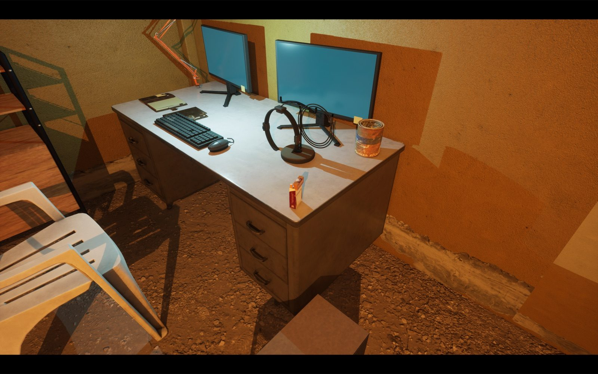
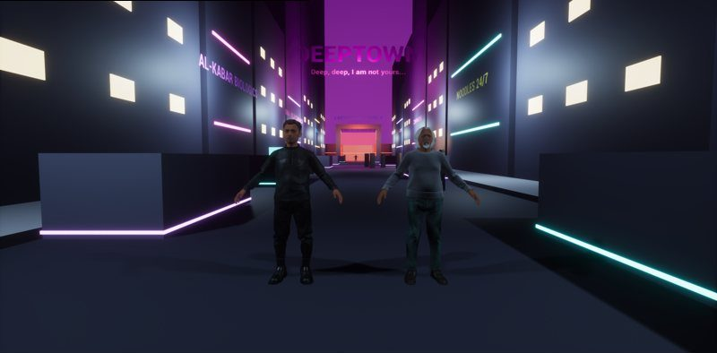

Real life
Harsh and about survival. A broken heater, a neighbour who needs help, a collector who wants two hundred by Friday. Talk your way out, pay, bluff, or take a fistfight you barely survive.
A story-first RPG · fan project
Broke and fragile in real life. Near-superhuman in the Deep. One man, two worlds, and the line between them is starting to crack.
Status: Chapter 1 playable end to end · Chapter 2 in production · Unreal Engine 5
The story
You are Leon "Stryker" Vance. Behind on rent, in a cold flat, with a debt collector at the door. But put on the neural band and you're a diver: one of the few people who can see through the Deep, the virtual city where most people forget they're in a simulation.

Harsh and about survival. A broken heater, a neighbour who needs help, a collector who wants two hundred by Friday. Talk your way out, pay, bluff, or take a fistfight you barely survive.

Neon, fast, and yours. Take jobs from Grey, talk past gate programs, fight through the Labyrinth's levels. In here, Leon is near-superhuman, and the contrast with real life is the point.
Pick a tone for every line. Skill checks show their odds up front and are rolled once, so choices stick.
In the Deep, read whoever you're talking to: a real person or an AI agent, and whether they're lying to you.
Real life doesn't pause while you dive. A drone at your real window can pull you out mid-mission.
Watch
Both clips are recorded straight from the Unreal build during automated test runs: a bot plays the chapter, and the footage is cut from its run.
The collector at the door, the first dive, Grey's job and the Labyrinth's first level. 2½ minutes.
The debt collector fight in the corridor outside flat 4A. 50 seconds.
Screenshots
How it's made
I set the direction and play the builds. The code, levels, story beats and tests are made by a team of AI coding agents that runs mostly on its own, overnight included.